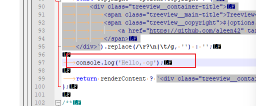
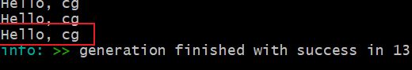
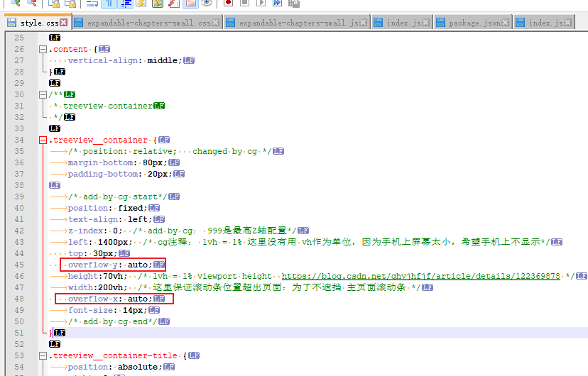
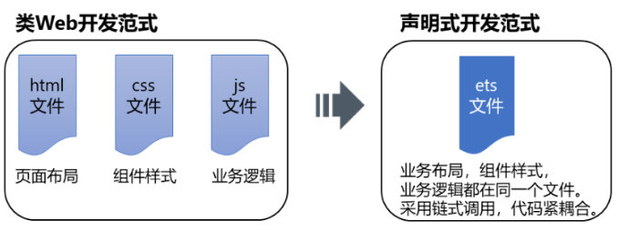

1. js语法
https://blog.51cto.com/u_16099196/6441732
1.1. 输入输出log

结果：

其他：
alert() 浏览器弹出警示框
console.log() 浏览器控制台打印输出信息
prompt() 浏览器弹出输入框，用户可以输入
2. 控件
2.1. 滚动
overflow属性是控制元素内容超出父级元素可视范围时的表现情况。它的属性值有：
（1）visible：“溢出”部分会呈现在元素框之外。
（2）hidden：隐藏“溢出”的内容。
（3）scroll：“溢出“内容显示滚动条。
（4）auto：自动确定是否需要显示滚动条
例子：

3. Web 开发 & 鸿蒙ACE
Web 开发范式中定义一个页面需要三个文件，html，css 和 js 文件

鸿蒙ACE（UI框架）：
https://www.elecfans.com/d/1975305.html
https://blog.csdn.net/weixin_41559503/article/details/128851385 ------> 好文
4. 鸿蒙其他
4.1. 应用流转迁移
4.2. 分布式数据库
4.3. 分布式任务调度
RemoteInputAbilitySlice.java ---------> 远程输入法
分布式剪切板
4.4. HarmonyOS官方文档
4.5. OpenHarmony官方文档
华为鸿蒙操作系统(OpenHarmony) v1.0 开发者文档：